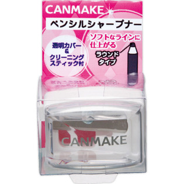

返回列表
产品名称：キャンメイク ペンシルシャープナー Ｒ

井田ラボラトリーズ キャンメイク ペンシルシャープナー Ｒ ＿
メーカー 井田ラボラトリーズ
JANコード 4901008016306
商品の特徴
丸く削れ、なめらかなラインにできます。お手入れに簡単・便利なクリーニングスティックと透明カバー付です。
成分・分量
＿
用法及び用量
【使用方法】
●ペンシルの軸をまっすぐ差し込み、やさしく削って下さい。
●ご使用後は透明カバーを外し削りカスを捨てて下さい。
●付属のクリーニングスティックで刃の汚れを取り、ティッシュペーパーや乾いた布で拭き取って下さい。
●刃物ですので、お取り扱いには十分お気をつけ下さい。